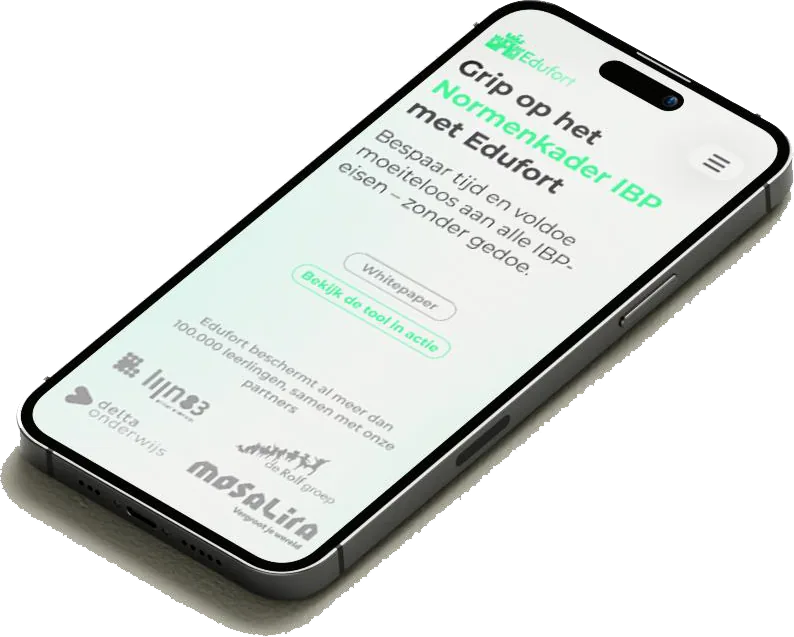
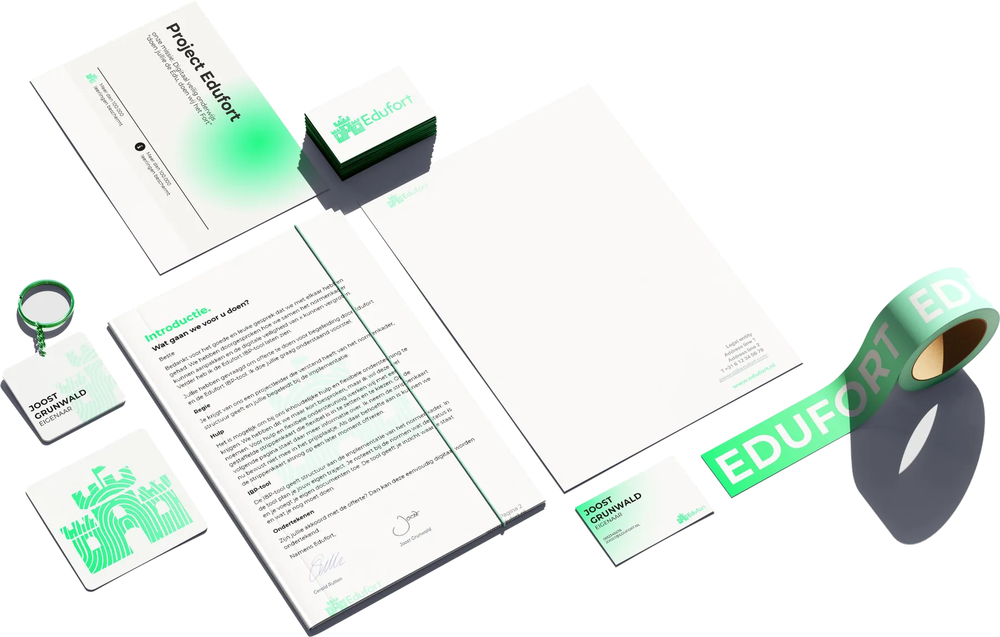

Edufort
afstudeerstage
Vaardigheden
- Design thinking
- Lo- & Hi-fi prototyping (Figma)
- Brand Design
- Graphic Design (Adobe Suite)

Voor Edufort, een cybersecuritybedrijf dat scholen ondersteunt met compliance-tools, heb ik de visuele identiteit en informatieve website opnieuw ontworpen, zodat deze de professionaliteit en kernwaarden van het bedrijf beter weerspiegelen. Hoewel het oorspronkelijke doel gericht was op het verbeteren van hun educatieve dashboard, zorgden veranderende prioriteiten van de klant ervoor dat de opdracht verschoof naar een volledige rebranding en vernieuwing van de website.
Ik heb gebruikersonderzoek, interviews met belanghebbenden en een concurrentieanalyse uitgevoerd om de richting van het merk te bepalen. Op basis van deze inzichten ontwikkelde ik een nieuwe merkidentiteit, een uitgebreide brand guide en responsieve websiteprototypes in zowel een lichte als donkere modus. De ontwerpen werden met gebruikers getest en verfijnd op basis van feedback en beoordelingen van experts.

Opgeleverd
- Brand guide
- Ontwerpsjablonen voor Word en PowerPoint
- Ontwikkelaarsklaar Figma-prototype
- Duidelijke documentatie voor de implementatie
Dit project heeft mijn vermogen versterkt om de behoeften van de klant af te wegen tegen ontwerpkeuzes, weloverwogen beslissingen te nemen en professionele, direct implementeerbare resultaten op te leveren.